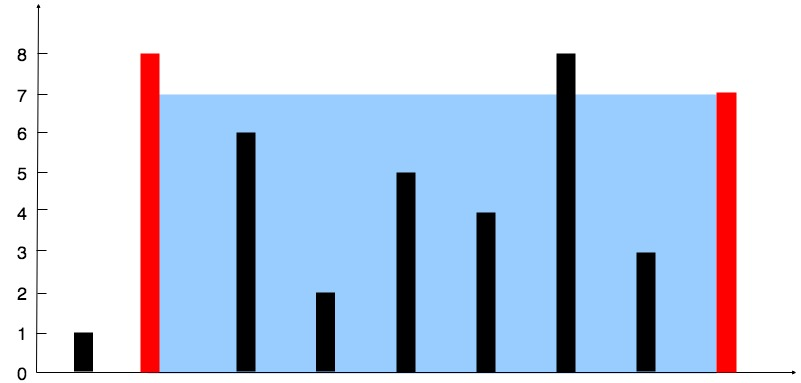

011 020
011¶
根据所给的数值，返回按照这个数值所构成的最多的容器的容积

譬如上图 7 \times 8=56
想法
得到容积需要两个值，暴力的做法是遍历
1 2 3 4 5 6 7 8 9 10 11 12 | class Solution: def maxArea(self, height): """ :type height: List[int] :rtype: int """ res = 0 for i in range(len(height)): for j in range(i + 1, len(height)): tmp = min(height[i], height[j]) * (j - i) res = max(res, tmp) return res |
想要聪明一点得到容器的容积需要
- DP？
- 那么如何记录值呢？状态生成式是？
- dp[]? dp[i]与其匹配的坐标？->如何计算，
min(height[i],height[dp[i-1]])*abs(i-dp[i-1]),? - 感觉dp不行
- 二分
- 两端向中心搜索？
- 遇到容积变少就是最大？
- 反例 1 8 8 8 9 1 5->4 最大16
- 计算差值，符合条件就移动？
- 容积取决于height[i],i
- min(height[i],height[j])*(j-i)
- 这里假设j不变
- 如果 慢着怎么感觉又跑到之前的想法了
- height[i+1]-height[i]>abs(j-(i+i)?
- 或者直接遍历？
法一¶
- 采用两个指针l和r，初始化分别指向数组的两端，
- 然后在向中间移动找到最大容量。
- 如果l指向的数字小，则l需要右移才有可能获得更大容量，
- 因为此时如果左移r，得到的容量肯定比左移r之前的容量小
- （高度已经被较小的l限制住了）。
- 如果r指向的数字小，则需要左移r。
- 这样，当l和r相遇的时候，最大的容量就是我们需要的
1 2 3 4 5 6 7 8 9 10 11 12 13 14 15 16 17 18 | class Solution: def maxArea(self, height): """ :type height: List[int] :rtype: int """ MAX = 0 right = len(height) - 1 left = 0 while right != left: if height[right] > height[left]: area = height[left] * (right - left) left += 1 else: area = height[right] * (right - left) right -= 1 MAX = max(MAX, area) return MAX |
012¶
int变为罗马数字
查表就行了
法一¶
1 2 3 4 5 6 7 8 9 10 11 12 13 14 | class Solution: def intToRoman(self, num): """ :type num: int :rtype: str """ M = ["", "M", "MM", "MMM"] C = ["", "C", "CC", "CCC", "CD", "D", "DC", "DCC", "DCCC", "CM"] X = ["", "X", "XX", "XXX", "XL", "L", "LX", "LXX", "LXXX", "XC"] I = ["", "I", "II", "III", "IV", "V", "VI", "VII", "VIII", "IX"] return M[num // 1000] +\ C[(num % 1000) // 100] +\ X[(num % 100) // 10] +\ I[num % 10] |
013¶
罗马数字变为int
1 to 3999
从后往前数呗
法一¶
1 2 3 4 5 6 7 8 9 10 11 12 13 14 15 16 17 18 19 20 | class Solution: def romanToInt(self, s): """ :type s: str :rtype: int """ dic = {"I": 1, "V": 5, "X": 10, "L": 50, "C": 100, "D": 500, "M": 1000} res = dic[s[-1]] for i in range(len(s) - 2, -1, -1): if dic[s[i]] < dic[s[i + 1]]: res -= dic[s[i]] else: res += dic[s[i]] return res |
其他¶
查表的方式
1 2 3 4 5 6 7 8 9 10 11 12 13 14 15 16 17 18 19 20 21 22 23 24 25 26 27 28 29 30 31 32 33 34 35 36 37 38 | class Solution(object): def romanToInt(self, s): """ :type s: str :rtype: int """ sym_to_num = { 'I': 1, 'V': 5, 'X': 10, 'L': 50, 'C': 100, 'D': 500, 'M': 1000 } special = { 'IV': 4, 'IX': 9, 'XL': 40, 'XC': 90, 'CD': 400, 'CM': 900 } i = 0 res = 0 l = len(s) while i < l: # 每次往前检查一下有没有特殊的数字 if i + 1 < l and s[i:i+2] in special: res += special[s[i:i+2]] i += 2 else: res += sym_to_num[s[i]] i += 1 return res |
014¶
返回一组字符串的最长的公共前缀
1 2 3 4 5 6 | Input: ["flower","flow","flight"] Output: "fl" Input: ["dog","racecar","car"] Output: "" Explanation: There is no common prefix among the input strings. |
想法
- DP？
- 异或？
- python不支持字符串的异或
先暴力试试吧
法一¶
1 2 3 4 5 6 7 8 9 10 11 12 13 14 15 16 | class Solution: def longestCommonPrefix(self, strs): """ :type strs: List[str] :rtype: str """ if len(strs) == 0: return "" ans = "" for i in range(len(strs[0])): # char = strs[0][i] for j in range(len(strs)): if i >= len(strs[j]) or strs[0][i] != strs[j][i]: return ans ans += strs[0][i] return ans |
015¶
对于给定的数组，判断是否有3个数相加为0，返回所有的解
想法
- 存储 set
- 使用2sum的思想？hash表来存储等于零的数字？
不对，这样就是暴力的做法- 那就暴力试试吧，用两个dic来做
- 排个序会更好？
先暴力试试，不过那也是n^3的复杂度
法一¶
最后还是用2sum的思想来暴力一次
1 2 3 4 5 6 7 8 9 10 11 12 13 14 15 16 17 18 19 20 21 22 23 24 25 26 | class Solution: def threeSum(self, nums): """ :type nums: List[int] :rtype: List[List[int]] """ if len(nums) < 3: return [] nums.sort() threeSumSet = set() for i, num in enumerate(nums[:-2]): # 对于每个数字，固定住，建一个表来存储差值 # 不过本身就是-num，所以不需要？ d = {} for j, nextNum in enumerate(nums[i + 1:]): diff = -num - nextNum if diff in d: threeSumSet.add((num, nextNum, -nextNum - num)) d[nextNum] = j res = [] for single_and in threeSumSet: res.append(list(single_and)) return res |
其他¶
1 2 3 4 5 6 7 8 9 10 11 12 13 14 15 16 17 18 19 20 21 22 23 | class Solution: def threeSum(self, nums): """ :type nums: List[int] :rtype: List[List[int]] """ if len(nums) < 3: return [] threeSum_set = set() nums.sort() for i, v in enumerate(nums[:-2]): if i >= 1 and v == nums[i - 1]: continue d = {} for j in nums[i + 1:]: if j not in d: d[-v - j] = 1 else: threeSum_set.add((v, -v - j, j)) res = [] for single_ans in threeSum_set: res.append(list(single_ans)) return res |
016¶
给定n个整数和整数目标的数组nums，在nums中找到三个整数，使得总和最接近目标。
返回总和
想法
3sum的变种，所以还是使用字典来存储 * key 数字num * value
使用3sum的思想，建立一字典，然后往后遍历查找
- 搜索之，左移右移？
- diff = target - num - (nums[left]+nums[right])
- diff小于零 需要查找得值变小 nums[right] down
- diff大于零 需要查找得值变大 nums[left] ascend
- 直到
- left>=right
- diff = 0
- abs(diff)最小，当abs(diff)变大时结束循环？
-1 -1 2 3 4
法一¶
1 2 3 4 5 6 7 8 9 10 11 12 13 14 15 16 17 18 19 20 21 22 23 24 25 26 | class Solution: def threeSumClosest(self, nums, target): """ :type nums: List[int] :type target: int :rtype: int """ if len(nums) <= 3: return sum(nums) closest = nums[0] + nums[1] + nums[2] nums.sort() distance = abs(closest - target) for i in range(len(nums) - 2): left = i + 1 right = len(nums) - 1 while left < right: new_nums_sum = nums[i] + nums[left] + nums[right] current_distance = abs(new_nums_sum - target) if current_distance <= distance: distance = current_distance closest = new_nums_sum if new_nums_sum < target: left += 1 else: right -= 1 return closest |
疑问¶
下面代码哪里出错了呢？
思路是一致的
注意缩进！！！！
1 2 3 4 5 6 7 8 9 10 11 12 13 14 15 16 17 18 19 20 21 22 23 | class Solution: def threeSumClosest(self, nums, target): """ :type nums: List[int] :type target: int :rtype: int """ nums.sort() record_diff = float("inf") for i, currentNum in enumerate(nums[:-2]): left = i + 1 right = len(nums) - 1 while left < right: if currentNum + nums[left] + nums[right] == target: return target diff = (currentNum + nums[left] + nums[right]) - target if abs(diff) < abs(record_diff): record_diff = diff if diff > 0: right = right - 1 else: left = left + 1 return target + record_diff |
017¶
给定一个包含2-9的字符串，返回手机键盘可能出现的字符
感觉使用python本身的性质就可以求得了，但是最好还是使用c的思想
一开始无法确定循环个数，循环长度
穷举咯，回溯咯
法一¶
感觉还是对递归不熟悉
1 2 3 4 5 6 7 8 9 10 11 12 13 14 15 16 17 18 19 20 21 22 23 24 25 26 27 28 29 30 31 32 33 34 | class Solution(object): def letterCombinations(self, digits): ''' type digits: str rtype: list[str] ''' def dfs(num, string, res): if num == length: res.append(string) return for letter in dict[digits[num]]: dfs(num + 1, string + letter, res) dict = {'2': ['a', 'b', 'c'], '3': ['d', 'e', 'f'], '4': ['g', 'h', 'i'], '5': ['j', 'k', 'l'], '6': ['m', 'n', 'o'], '7': ['p', 'q', 'r', 's'], '8': ['t', 'u', 'v'], '9': ['w', 'x', 'y', 'z'] } res = [] length = len(digits) if length == 0: return [] dfs(0, '', res) return res for i in Solution().letterCombinations("2352"): print(i) |
其他¶
1 2 3 4 5 6 7 8 9 10 11 12 13 | class Solution: def letterCombinations(self, digits): """ :type digits: str :rtype: List[str] """ if len(digits)==0: return [] num_to_char={'2': 'abc','3': 'def','4': 'ghi','5': 'jkl','6': 'mno','7': 'pqrs','8': 'tuv','9': 'wxyz'} res = [i for i in num_to_char[digits[0]]] for i in digits[1:]: res = [m + n for m in res for n in num_to_char[i]] return res |
018¶
给定一个target，使用4个数字拼凑它
4sum
法一¶
我干脆试试3sum closet算了
1 2 3 4 5 6 7 8 9 10 11 12 13 14 15 16 17 18 19 20 21 22 23 24 25 | class Solution: def fourSum(self, nums, target): """ :type nums: List[int] :type target: int :rtype: List[List[int]] """ nums.sort() res = [] for i in range(len(nums) - 3): for j in range(i + 1, len(nums) - 2): start = j + 1 end = len(nums) - 1 while start < end: value = nums[i] + nums[j] + nums[start] + nums[end] if value == target: res.append([nums[i], nums[j], nums[start], nums[end]]) start += 1 elif value < target: start += 1 elif value > target: end -= 1 res = list(set([tuple(t) for t in res])) res = [list(v) for v in res] return res |
其他¶
Todo
1 2 3 4 5 6 7 8 9 10 11 12 13 14 15 16 17 18 19 20 21 22 23 24 25 26 27 28 29 30 31 32 33 34 35 36 37 | class Solution: def fourSum(self, nums, target): """ :type nums: List[int] :type target: int :rtype: List[List[int]] """ def findNsum(nums,target,N,result,results): if N<2 or len(nums)<N or nums[0]*N>target or nums[-1]*N < target: return if N==2: l=0 r=len(nums)-1 while l<r: s=nums[l]+nums[r] if s==target: results.append(result+[nums[l],nums[r]]) l+=1 r-=1 while l<r and nums[l]==nums[l-1]: l+=1 while l<r and nums[r]==nums[r+1]: r-=1 elif s<target: l+=1 else: r-=1 else: for i in range(len(nums)-N+1): if i==0 or (i>0 and nums[i]!=nums[i-1]): findNsum(nums[i+1::],target-nums[i],N-1,result+[nums[i]],results) results = [] result = [] findNsum(sorted(nums), target,4,result,results) return results |
019¶
给定以个单链表，移除倒数第n个节点
先暴力试试
有一些边界条件
- 倒数第n个节点是head节点
- 倒数第n个节点是尾节点
法一¶
直接暴力上
1 2 3 4 5 6 7 8 9 10 11 12 13 14 15 16 17 18 19 20 21 22 | class Solution: def removeNthFromEnd(self, head, n): """ :type head: ListNode :type n: int :rtype: ListNode """ p = head record = [] while p != None: record.append(p) p = p.next if len(record) == 1: del (head) return None if len(record) == n: return record[1] left = record[-n - 1] left.next = left.next.next record[-n].next = None del (record[-n]) return head |
其他¶
这个方式比暴力的方式聪明多了 首先right先走n步，然后left开始计算 接着遍历之，如果right走完了，那么left刚好到达倒数第n个节点 因为right与left相差n个节点，right走完了，那么left离完成遍历还有n个节点，所以是倒数第n个
1 2 3 4 5 6 7 8 9 10 11 12 13 14 15 16 17 18 19 20 21 22 23 24 | class Solution: def removeNthFromEnd(self, head, n): """ :type head: ListNode :type n: int :rtype: ListNode """ p = head right = p while n > 0: n -= 1 right = right.next left = head if not right: head = head.next return head while right and right.next: right = right.next left = left.next left.next = left.next.next return head |
020¶
判断一个左右括号是否是合法的
感觉使用stack？
法一¶
1 2 3 4 5 6 7 8 9 10 11 12 13 14 15 16 17 18 19 20 21 22 | class Solution: def isValid(self, s): """ :type s: str :rtype: bool """ stack = [] left = ['(', '[', '{'] for i in range(len(s)): if s[i] in left: stack.append(s[i]) continue elif s[i] == ')': if len(stack) == 0 or stack.pop() != '(': return False elif s[i] == ']': if len(stack) == 0 or stack.pop() != '[': return False elif s[i] == '}': if len(stack) == 0 or stack.pop() != '{': return False return len(stack) == 0 |